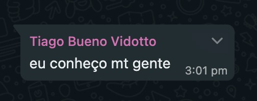
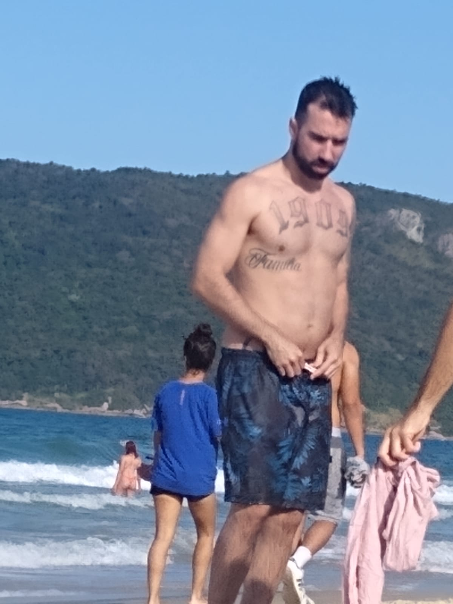
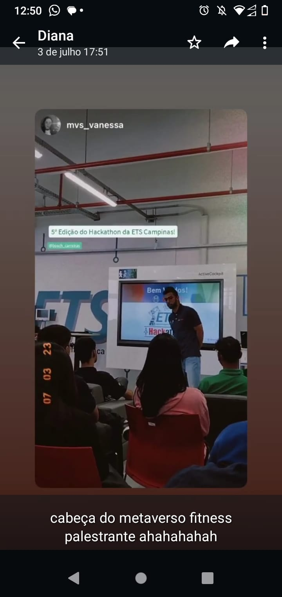

A primeira aparição suspeita.
Ocorreu em uma reunião online de um conhecido.
Nesse momento a humanidade atravessava uma crise pandêmica avalassadora.
A imagem foi encaminhada para um dos mais fieis entre os amigos de Tiago.
Versão hetero, fiel, casado, com filhos e bem de vida.
Em março de 2022 surge um depoimento intrigante:
Setembro de 2022:


Após sete meses apareceram mais duas versões, foi onde começamos a desenvolver duas teorias:
Teoria 1: O TiagoVerso havia sido dissimado, logicamente por um Tiago. Os sobreviventes refugiaram-se para este universo.
Teoria 2: Algumas versões foram encaminhados do TiagoVerso para este universo na missão de conter a pandemia e salvar o mundo! Mas imagens nos levavam a crer que algumas versões haviam falhado, uma sucumbia aos holofotes e a fama, outra versão sucumbia a outra droga que o consumia tanto quanto: o craque!
Versão: filhinho da mamãe, se acha estrelinha, tem autoestima baixa e faz qualquer coisa por fama.
Versão: nerd cracudo, não aguentou a pressãao de perder pro prainha no dragon ball.
Outubro de 2022 (O Lider):

No mês seguinte avistamos quem imaginamos ser o Lider. Não há provas, evidências ou informações o suficiente para afirmar se o acesso foi feito deste universo ou do próprio TiagoVerso! Algo que nos faz refletir muito sobre as possibilidades de comunicação e interação entre os universos...
Versão: O lider, a preocupação e o peso estampados na face de quem tem que tomar decisões dificeis e que todo mundo acha cruel. Olhar obstinado por justiça e liberdade.
Novembro de 2022 (ItaloVerso):
No mês seguinte nossas teorias sobre possibilidades de interação entre universos se expandiram exponencialmente e colossalmente! Foi avistado um elemento que aprensentou todos os requisitos que comprovaria ser a união do ItaloVerso e o TiagoVerso! Vocês podem imaginar o quão entusiasmados ficamos?!
Versão: fusão Italo + Tiago.
Janeiro de 2023:


Foi quando mais pessoas despertaram em curiosidade e começaram a acreditar no TiagoVerso! Começaram nos enviar mensagens e imagens, todas muito suspeitas!
Versão: fumante e sem esperanças.
Versão: viciado e gatuno de bolinhos.
Versão: basqueteiro (leia como se estivesse na quinta-serie).
Março de 2023 (Padrão: "Lucas"):


Ainda é cedo para concluirmos algo, mas talvez tenhamos encontrado um padrão, mais de uma versão veio para esse universo e recebeu o nome de "Lucas"... Sera algo biblico? Devemos nos preocupar com o apocalipse?
Março de 2023
Versão: Irmão feliz e mulecão da sapatão. ... Seria essa a minha versão em outro universo? FomFom!
Junho de 2023 (Turquia):

Julho de 2023:
Então nossas teorias começaram a tomar diferentes caminhos e construções... Fato de que até onde estamos a pandemia foi contida, então pensamos em mais duas hipoteses:
1. Os Tiagos tiveram sucesso, porem nao conseguiram regressar ao seu universo de origem, alguns seguem tentando se comunicar com seu lider, e outros foram consumidas por prazeres terrenos desmedidos, ou autodestruição, se perderam nas drogas e nos bolinhos...
2. Havera outra pandemia e algumas versões ainda trabalhm nisso, enquanto outras versões se perderam na transição...
Aqui
você encontra imagens do Tiago deste universo, um fato curioso é a marca de nascença que ele traz na testa... E as pessoas com quem ele anda... muito suspeito!